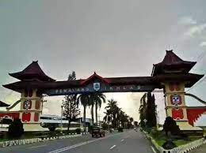

Sejarah Kabupaten Pemalang
Kabupaten Pemalang merupakan salah satu kabupaten di Provinsi Jawa Tengah yang terletak di pantai utara Pulau Jawa. Secara astronomis Kabupaten Pemalang terletak antara 109°17'30" - 109°40'30" BT dan 6°52'30" - 7°20'11" LS.
Ibukota kabupaten ini berada di ujung barat laut wilayah kabupaten, berbatasan langsung dengan Kabupaten Tegal. Pemalang berada di jalur pantura Jakarta-Semarang-Surabaya. Selain itu terdapat jalan provinsi yang menghubungkan Pemalang dengan Purbalingga.
Dari Semarang (Ibu Kota Provinsi Jawa Tengah), Kabupaten ini berjarak kira-kira 135 Km ke arah barat, atau jika ditempuh dengan kendaraan darat memakan waktu lebih kurang 3 - 4 jam. Kabupaten Pemalang memiliki luas wilayah sebesar 111.530 km